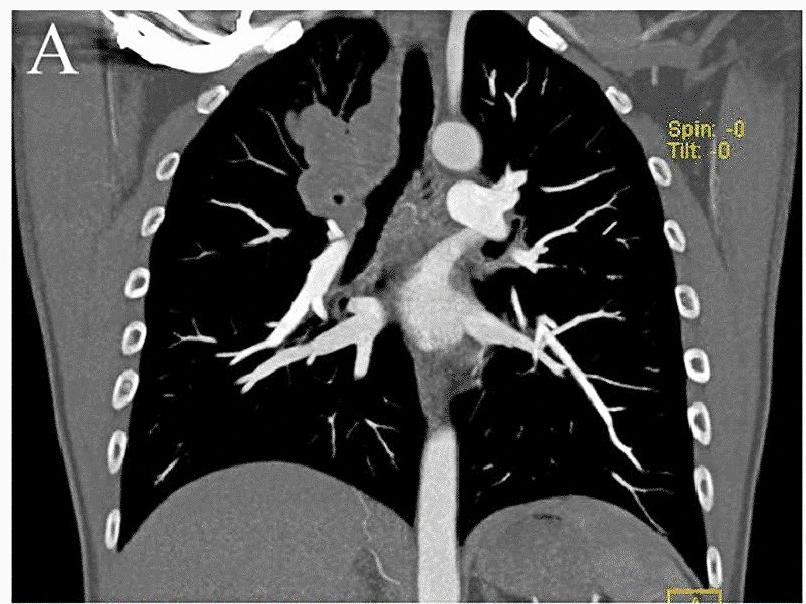

022 — Khối phổi (> 30 mm) & TNM ung thư phổi / Pulmonary mass & Lung cancer staging
Tags: pattern:khoi vung:phoi score:TNM
Mức chắc chắn (certainty): tổng hợp y văn (literature synthesis) — nhóm tự biên từ y văn mở, chưa gắn ca nguyên văn đơn lẻ.
1. Tổng quan — > 30 mm là thế giới khác + TNM 9
- Khối (mass) > 30 mm: xác suất ác cao hẳn nốt; câu hỏi chuyển từ "theo dõi hay không" sang "giai đoạn mấy + mổ được không".
- TNM 9 (số nhớ nằm lòng): T1 ≤ 30 mm (a ≤ 10, b 11–20, c 21–30 mm); T2 31–50 mm; T3 51–70 mm hoặc xâm lấn thành ngực/carina; T4 > 70 mm hoặc carina/khí quản/tim/mạch lớn/cột sống. N: cùng bên rốn/trung thất (N1/N2) vs đối bên/trên đòn (N3). M: trong ngực đối bên (M1a), 1 ổ ngoài ngực (M1b), đa ổ (M1c).
- TẠI SAO kích thước quyết định: thể tích u ∝ tải đột biến + xác suất di căn hạch/xa; hạch to ngắn trục ≥ 10 mm là ngưỡng bệnh lý (không đặc hiệu, cần PET/mô bệnh).
2. Gamut khối theo vị trí + bối cảnh
- Trung tâm + hút thuốc + ho máu: SCC (hang, Golden S — bài 030), SCLC (khối lớn + hạch sớm).
- Ngoại vi + không hút thuốc: adeno (kính mờ/bán đặc — bài 020), hamartoma (mỡ/vôi bỏng ngô), viêm tổ chức hóa.
- Trẻ + nhiều hạch + B symptoms: lymphoma (bao mạch không tắc — bài 060).
- Nhanh + sốt + mủ: áp-xe/viêm hoại tử (mức dịch — bài 025), nhồi máu bội nhiễm.

CT coronal: khối thùy trên phải + hạch rốn/trung thất (panel A cắt từ figure gốc). Nguồn: Liu et al., Orphanet J Rare Dis 2023, CC BY 4.0.3. Bảng so sánh
| Thực thể (entity) | Hình ảnh điển hình | Chốt vào (rule-in) | Chốt loại (rule-out) | Gợi ý xác nhận |
|---|---|---|---|---|
| K phổi nguyên phát | Khối + hạch cùng bên, hang SCC / kính mờ adeno | Khối > 30 + hạch + hút thuốc | Mỡ/vôi bỏng ngô → hamartoma | PET-CT + sinh thiết + đột biến (EGFR/ALK/PD-L1) |
| Di căn đến phổi | Nhiều nốt/khối 2 bên, pháo đài (cannonball) | Tiền sử K ngoài phổi + đa ổ | Đơn độc không tiền sử → nguyên phát | CT toàn thân, so phim cũ |
| Lymphoma | Bao mạch không tắc + hạch nhiều nhóm + trẻ | Bao mạch + B symptoms + tuổi trẻ | Xâm lấn/tắc mạch → K xâm lấn | Sinh thiết hạch |
| Viêm/áp-xe giả u | Mức dịch + sốt + tan sau kháng sinh | Tan sau điều trị + cấy (+) | Tồn tại > 8 tuần → u | (nối bài 025/031) |
4. Protocol + flowchart giai đoạn
- CT cản quang ngực-bụng + PET-CT toàn thân + MRI não (adeno/SCLC giai đoạn đầy đủ); đo trục dài khối + trục ngắn hạch (≥ 10 mm).
- Ngưỡng mổ: I–IIIA (N2 đơn trạm chọn lọc) → hội chẩn đa chuyên khoa; IV → toàn thân.
flowchart TD
A[Khối >30mm] --> B{Hạch/di căn xa?}
B -->|Không| C[T1-2N0M0: mổ ± bổ trợ]
B -->|Hạch cùng bên| D[N1/N2: hóa-xạ tân bổ trợ rồi mổ chọn lọc]
B -->|Đối bên/xa| E[M1/N3: toàn thân + đột biến/PD-L1]
5. Cạm bẫy
- Hạch viêm/phản ứng ≥ 10 mm sau viêm/lao — PET cũng bắt giả; mô bệnh quyết định.
- Xẹp phổi sau khối làm u trông to hơn — đo nhân đặc, đừng đo cả vùng xẹp.
- Khối đỉnh + hội chứng Pancoast (đau tay, Horner) — MRI đám rối cánh tay, đừng chỉ CT.
6. Tự lượng giá — Blind Quiz
Ca 1 — Khối thùy trên phải + hạch. Đo và xếp TNM sơ bộ.
- Hỏi: khối hay nốt (> 30 mm)? Hạch nhóm nào? T/N sơ bộ?
Bấm để hiện đáp án
- Khối thùy trên phải + hạch rốn/trung thất — kích thước khối (> 30 mm) + hạch cùng bên gợi ít nhất T2N1–2; cần PET + mô bệnh hoàn tất.
- ⚠️ Phản biện: ca gốc là histiocytosis ALK+ hiếm (không phải K phổi điển hình) — minh họa "khối + hạch", không suy ra mô bệnh từ hình thái.
- Nguồn: Liu et al., CC BY 4.0 (toàn figure A–F trong CREDITS).
Ca 2 — Khối + hạch đối bên + 1 ổ thượng thận: TNM? Hướng xử trí? (Không ảnh local — suy luận từ mục 4.)
Bấm để hiện đáp án
- M1b/N3 — giai đoạn IV: toàn thân (đột biến/PD-L1), không mổ triệt căn.
Bài liên quan chéo
- 001 – Tổng quan hệ Ngực
- 020 – Nốt phổi (≤ 30 mm)
- 060 – Khối trung thất ITMIG (lan trung thất)
Không dùng để chẩn đoán độc lập khi chưa có người hướng dẫn.